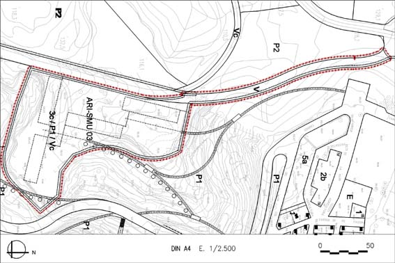

ARI 03 “Fàbrica de marbre” (Sector de Millora Urbana ARI-SMU 03)

Règim del sòl: Sòl Urbà No Consolidat
| Superfície del polígon: Ordenació (plànol indicatiu) Sistemes urbanístics de cessió: Viari (V) Viari cívic (Vc) Espais lliures (P1) Zones edificables: (Gàlibs indicatius) Residencial volumetria específica (clau 3c) |
18.000m2s 2.363m2s 3.491m2s 9.066m2s 3.080m2s |
C.E.B.: (St) Sostre total (B+3 i B+4) (SH) Sostre per habitatges Nombre màxim d’habitatges: Règim HRL : (50% SH) Règim HPC: (20% SH) 2.572 m²st Règim HPO : (20% SH)2.572 m²st Règim HP lloguer: (10% SH) 1.286 m²st |
0,80 m2st/m2s 14.400m2st 12.860m2st 146 hab. 60 hab. 29 hab. 33 hab. 24 hab. |